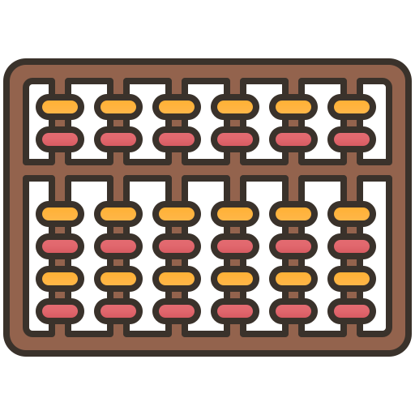
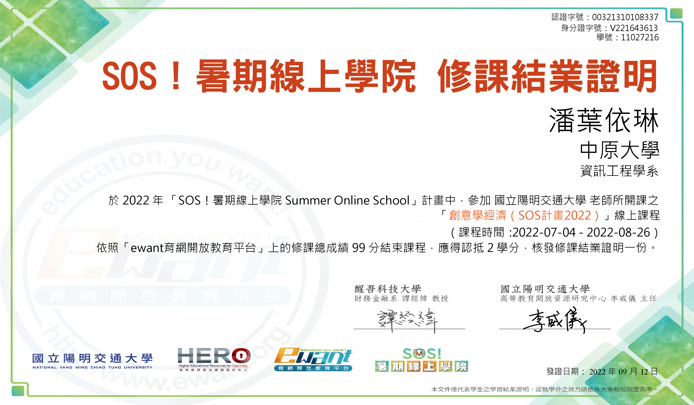
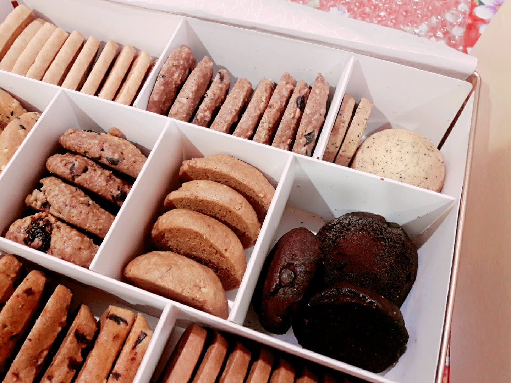
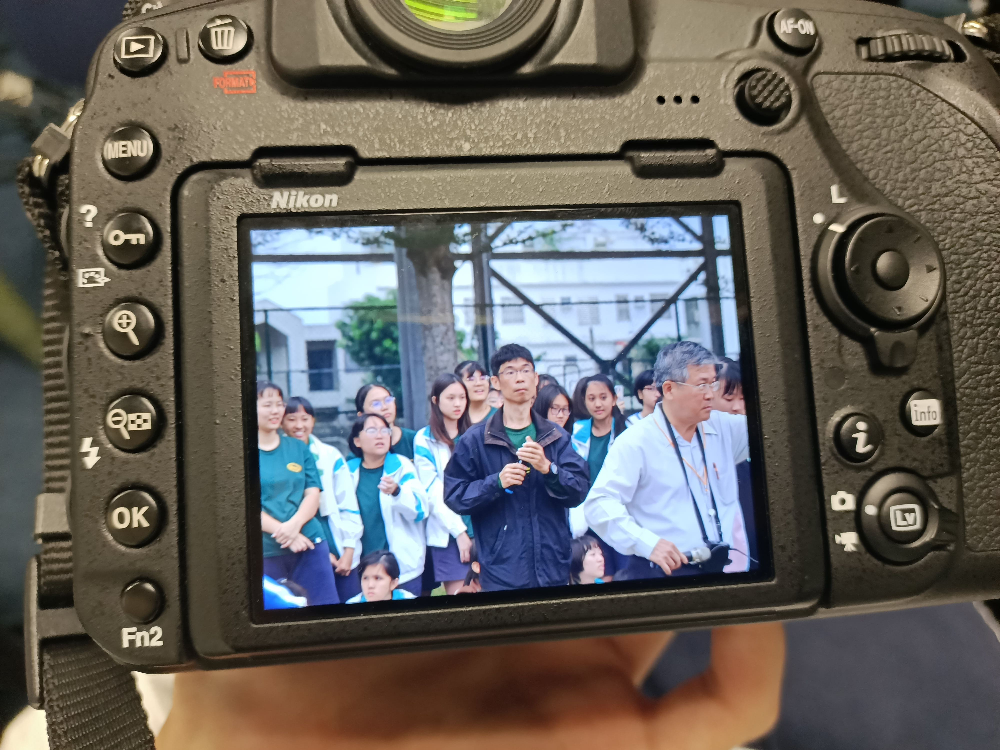
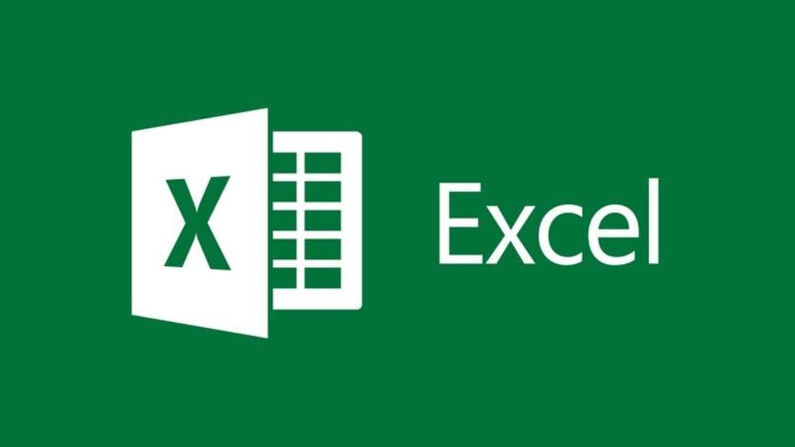
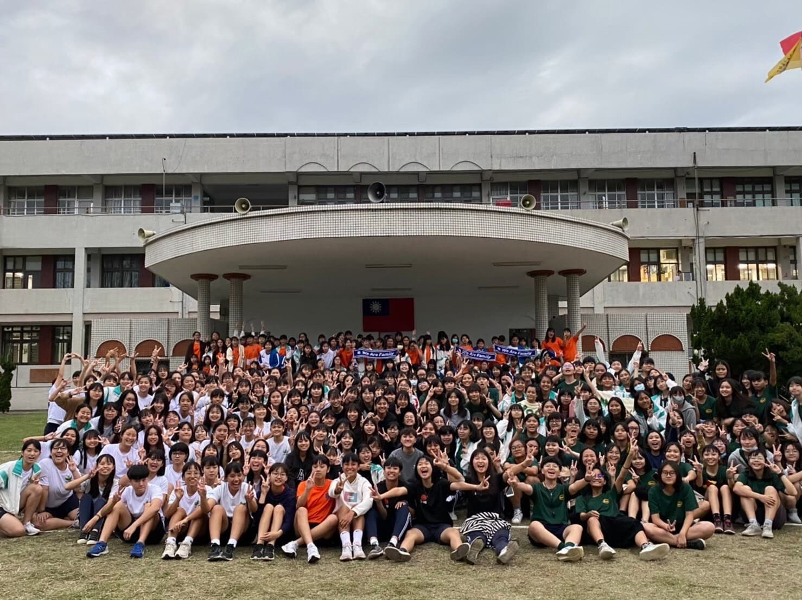
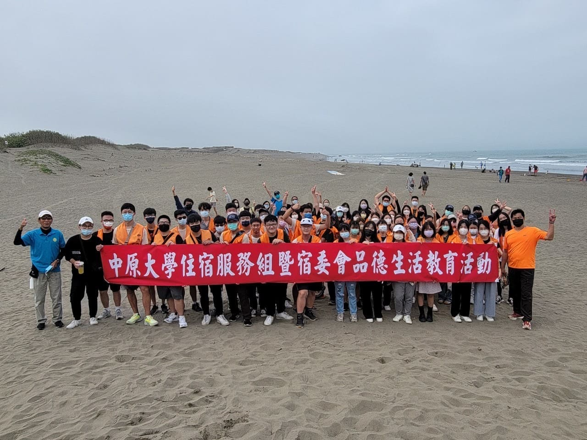

About Me
|興趣|
喜愛看電視劇、電影
喜歡攝影、烘焙、旅遊
|個性|
好奇心旺盛
樂觀開朗、愛交朋友


Interest

鋼琴
珠算
攝影

游泳
Programming Skills
HTML
70%
CSS
60%
C語言
70%
Java
50%
課程

Ewant - 創意學經濟
透過許多有趣的內容學習到了賽局理論
、貨幣與金融原理、供需法則、優勢判別與交易互利……
其中有一堂課讓我們模擬線上投資股票
在學習的當中發現越來越感興趣，因此最終也取得了99的高分!
透過許多有趣的內容學習到了賽局理論
、貨幣與金融原理、供需法則、優勢判別與交易互利……
其中有一堂課讓我們模擬線上投資股票
在學習的當中發現越來越感興趣，因此最終也取得了99的高分!
-----------------------------------------------------------------------------------------------------------------------------------------------------------------------------------------------------------------
社團

烘焙社
因為很喜歡吃甜點和餅乾，平常在家也會做
所以在高一時選擇加入了烘焙社
希望能學到更多烘焙技巧

攝影社
我從國小開始就有在接觸攝影，
國小時曾為家鄉拍過紀錄片，
在高中和大學都有參加攝影社。
攝影讓我學會去觀察周遭的環境、
人、事、物，可以訓練我的觀察力。
因為很喜歡吃甜點和餅乾，平常在家也會做
所以在高一時選擇加入了烘焙社
希望能學到更多烘焙技巧
我從國小開始就有在接觸攝影，
國小時曾為家鄉拍過紀錄片，
在高中和大學都有參加攝影社。
攝影讓我學會去觀察周遭的環境、
人、事、物，可以訓練我的觀察力。
-----------------------------------------------------------------------------------------------------------------------------------------------------------------------------------------------------------------
工作經歷

Excel資料整理
因為有在生輔組做工讀
透過承辦人姊姊介紹，而得到這份工作
在做資料分析時，發現自己對於Excel還需加強
也透過這份工作學習到Excel許多功能，像是:巨集、資料對比
因為有在生輔組做工讀
透過承辦人姊姊介紹，而得到這份工作
在做資料分析時，發現自己對於Excel還需加強
也透過這份工作學習到Excel許多功能，像是:巨集、資料對比
-----------------------------------------------------------------------------------------------------------------------------------------------------------------------------------------------------------------
志工 - 服務的精神

高中
剛開始是爸爸的朋友有在帶志工團，
因緣際會加進去，開始了自己的志工身涯，
而資管需要了解客戶需求並和工程師溝通，
而透過志工活動則我學習到服務精神，嘗
試了解、觀察他人需求，正好和資管需要的能力謀合。

大學
從國中開始參加志工活動，透過志工活動
我學習到與小朋友溝通。
擔任宿舍幹部學習和年齡相近的人共事
學著處理學妹的問題......
也決定接下宿舍主委的工作，正在交接當中!
剛開始是爸爸的朋友有在帶志工團，
因緣際會加進去，開始了自己的志工身涯，
而資管需要了解客戶需求並和工程師溝通，
而透過志工活動則我學習到服務精神，嘗
試了解、觀察他人需求，正好和資管需要的能力謀合。
從國中開始參加志工活動，透過志工活動
我學習到與小朋友溝通。
擔任宿舍幹部學習和年齡相近的人共事
學著處理學妹的問題......
也決定接下宿舍主委的工作，正在交接當中!